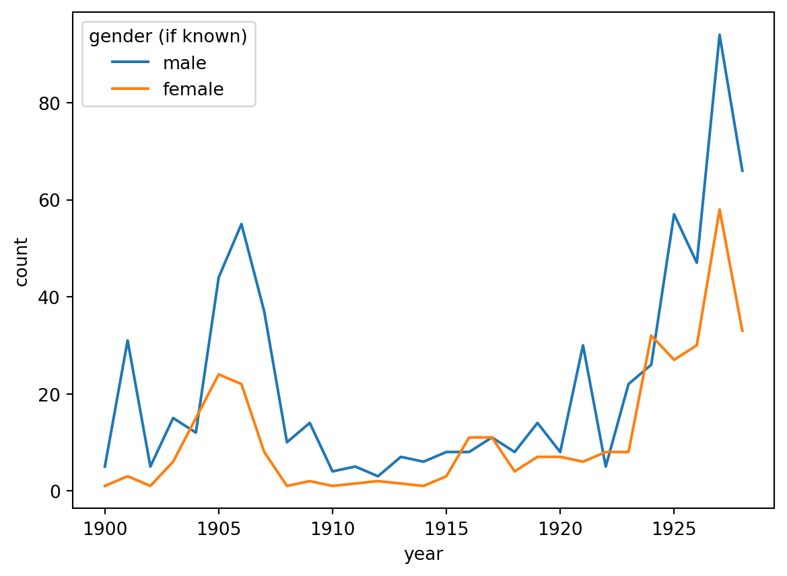
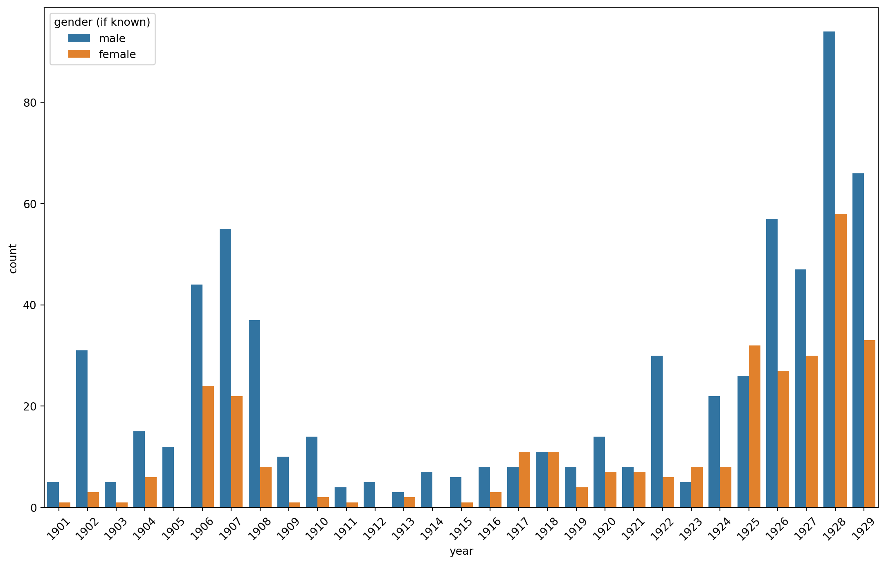

Code
import pandas as pdFebruary 26, 2024
<DatetimeArray>
['1900-01-01 00:00:00', '1901-01-01 00:00:00', '1902-01-01 00:00:00',
'1903-01-01 00:00:00', '1904-01-01 00:00:00', '1905-01-01 00:00:00',
'1906-01-01 00:00:00', '1907-01-01 00:00:00', '1908-01-01 00:00:00',
'1909-01-01 00:00:00', '1910-01-01 00:00:00', '1911-01-01 00:00:00',
'1912-01-01 00:00:00', '1913-01-01 00:00:00', '1914-01-01 00:00:00',
'1915-01-01 00:00:00', '1916-01-01 00:00:00', '1917-01-01 00:00:00',
'1918-01-01 00:00:00', '1919-01-01 00:00:00', '1920-01-01 00:00:00',
'1921-01-01 00:00:00', '1922-01-01 00:00:00', '1923-01-01 00:00:00',
'1924-01-01 00:00:00', '1925-01-01 00:00:00', '1926-01-01 00:00:00',
'1927-01-01 00:00:00', '1928-01-01 00:00:00']
Length: 29, dtype: datetime64[ns]year gender (if known)
1900-01-01 male 5
female 1
1901-01-01 male 31
female 3
1902-01-01 male 5
female 1
1903-01-01 male 15
female 6
1904-01-01 male 12
1905-01-01 male 44
female 24
1906-01-01 male 55
female 22
1907-01-01 male 37
female 8
1908-01-01 male 10
female 1
1909-01-01 male 14
female 2
1910-01-01 male 4
female 1
1911-01-01 male 5
1912-01-01 male 3
female 2
1913-01-01 male 7
1914-01-01 male 6
female 1
1915-01-01 male 8
female 3
1916-01-01 female 11
male 8
1917-01-01 female 11
male 11
1918-01-01 male 8
female 4
1919-01-01 male 14
female 7
1920-01-01 male 8
female 7
1921-01-01 male 30
female 6
1922-01-01 female 8
male 5
1923-01-01 male 22
female 8
1924-01-01 female 32
male 26
1925-01-01 male 57
female 27
1926-01-01 male 47
female 30
1927-01-01 male 94
female 58
1928-01-01 male 66
female 33
Name: count, dtype: int64| year | gender (if known) | count | |
|---|---|---|---|
| 0 | 1900-01-01 | male | 5 |
| 1 | 1900-01-01 | female | 1 |
| 2 | 1901-01-01 | male | 31 |
| 3 | 1901-01-01 | female | 3 |
| 4 | 1902-01-01 | male | 5 |
| 5 | 1902-01-01 | female | 1 |
| 6 | 1903-01-01 | male | 15 |
| 7 | 1903-01-01 | female | 6 |
| 8 | 1904-01-01 | male | 12 |
| 9 | 1905-01-01 | male | 44 |
| 10 | 1905-01-01 | female | 24 |
| 11 | 1906-01-01 | male | 55 |
| 12 | 1906-01-01 | female | 22 |
| 13 | 1907-01-01 | male | 37 |
| 14 | 1907-01-01 | female | 8 |
| 15 | 1908-01-01 | male | 10 |
| 16 | 1908-01-01 | female | 1 |
| 17 | 1909-01-01 | male | 14 |
| 18 | 1909-01-01 | female | 2 |
| 19 | 1910-01-01 | male | 4 |
| 20 | 1910-01-01 | female | 1 |
| 21 | 1911-01-01 | male | 5 |
| 22 | 1912-01-01 | male | 3 |
| 23 | 1912-01-01 | female | 2 |
| 24 | 1913-01-01 | male | 7 |
| 25 | 1914-01-01 | male | 6 |
| 26 | 1914-01-01 | female | 1 |
| 27 | 1915-01-01 | male | 8 |
| 28 | 1915-01-01 | female | 3 |
| 29 | 1916-01-01 | female | 11 |
| 30 | 1916-01-01 | male | 8 |
| 31 | 1917-01-01 | female | 11 |
| 32 | 1917-01-01 | male | 11 |
| 33 | 1918-01-01 | male | 8 |
| 34 | 1918-01-01 | female | 4 |
| 35 | 1919-01-01 | male | 14 |
| 36 | 1919-01-01 | female | 7 |
| 37 | 1920-01-01 | male | 8 |
| 38 | 1920-01-01 | female | 7 |
| 39 | 1921-01-01 | male | 30 |
| 40 | 1921-01-01 | female | 6 |
| 41 | 1922-01-01 | female | 8 |
| 42 | 1922-01-01 | male | 5 |
| 43 | 1923-01-01 | male | 22 |
| 44 | 1923-01-01 | female | 8 |
| 45 | 1924-01-01 | female | 32 |
| 46 | 1924-01-01 | male | 26 |
| 47 | 1925-01-01 | male | 57 |
| 48 | 1925-01-01 | female | 27 |
| 49 | 1926-01-01 | male | 47 |
| 50 | 1926-01-01 | female | 30 |
| 51 | 1927-01-01 | male | 94 |
| 52 | 1927-01-01 | female | 58 |
| 53 | 1928-01-01 | male | 66 |
| 54 | 1928-01-01 | female | 33 |
# If there were missing years, this is how you might handle it
# Create a dataframe with a complete range of years from 1900 to 1930
# years = pd.DataFrame({'year': pd.date_range(start='1900', end='1930', freq='YS')})
# Merge with existing dataframe
# aa_gender_by_year = pd.merge(years, aa_gender_by_year, on='year', how='left')
# Fill NaN values
#aa_gender_by_year['gender (if known)'] = aa_gender_by_year['gender (if known)'].fillna("no author recorded")
#aa_gender_by_year['count'] = aa_gender_by_year['count'].fillna(0)
# Sort years and return unique years to check for missing data
#aa_gender_by_year['year'].sort_values().unique()
#aa_gender_by_yearimport seaborn as sns
import matplotlib.pyplot as plt
import matplotlib.dates as mdates
# Create the line plot
ax = sns.lineplot(data=aa_gender_by_year, x="year", y="count", hue="gender (if known)")
# Set x-axis major ticks to every 5 years
ax.xaxis.set_major_locator(mdates.YearLocator(5))
# Format the x-axis labels to show the year only
#ax.xaxis.set_major_formatter(mdates.DateFormatter('%Y'))
from matplotlib.ticker import MultipleLocator
plt.figure(figsize=(13.7, 8.27))
# Create the bar plot
ax = sns.barplot(data=aa_gender_by_year,
# pull out just the year
x=aa_gender_by_year["year"].dt.year, y="count", hue="gender (if known)")
# Set x-axis major ticks every 1 year
ax.xaxis.set_major_locator(MultipleLocator(1))
# Set x-axis labels to the desired format (only show every 5th year)
ax.set_xticklabels([date.year for date in pd.date_range(start='1900', end='1930', freq='YS')], rotation=45)
plt.show()/tmp/ipykernel_7807/3665439903.py:14: UserWarning:
set_ticklabels() should only be used with a fixed number of ticks, i.e. after set_ticks() or using a FixedLocator.

---
title: "Visualize Author Gender By Year (Solution)"
date: "2024-02-26"
categories: [seaborn, plotly, interactive, line-plot, bar-plot, groupby, python, solution, exercise]
toc: true
format:
html: default
ipynb: default
code-overflow: wrap
code-fold: show
editor: visual
df-print: kable
R.options:
warn: false
code-tools: true
execute:
eval: true
---
# Import pandas
```{python}
import pandas as pd
```
# Read in CSV
```{python}
aa_df = pd.read_csv("https://raw.githubusercontent.com/melaniewalsh/responsible-datasets-in-context/main/datasets/aa-periodical-poetry/African-American-Periodical-Poetry_1900-1928-Created-by-Amardeep-Singh-and-Kate-Hennessey,-Lehigh-University.csv")
```
# View first 5 rows
```{python}
aa_df.head()
aa_df['gender (if known)'].value_counts()
```
# Convert year to datetime value
```{python}
aa_df['year'] = pd.to_datetime(aa_df['year'], format = "%Y")
#aa_df.set_index('year').reindex(pd.date_range('1900-01-01', '1930-12-31', freq='Y'))
# Sort years and return unique years to check for missing data
aa_df['year'].sort_values().unique()
```
# Group by year, count instances of author by gender
```{python}
aa_df.groupby('year')['gender (if known)'].value_counts()
```
# Make this grouping into a dataframe
```{python}
aa_gender_by_year = aa_df.groupby('year')['gender (if known)'].value_counts().reset_index()
#aa_gender_by_year['year'] = aa_gender_by_year['year'].astype(int)
aa_gender_by_year
```
```{python}
# If there were missing years, this is how you might handle it
# Create a dataframe with a complete range of years from 1900 to 1930
# years = pd.DataFrame({'year': pd.date_range(start='1900', end='1930', freq='YS')})
# Merge with existing dataframe
# aa_gender_by_year = pd.merge(years, aa_gender_by_year, on='year', how='left')
# Fill NaN values
#aa_gender_by_year['gender (if known)'] = aa_gender_by_year['gender (if known)'].fillna("no author recorded")
#aa_gender_by_year['count'] = aa_gender_by_year['count'].fillna(0)
# Sort years and return unique years to check for missing data
#aa_gender_by_year['year'].sort_values().unique()
#aa_gender_by_year
```
# Visualize with seaborn
```{python}
import seaborn as sns
import matplotlib.pyplot as plt
import matplotlib.dates as mdates
# Create the line plot
ax = sns.lineplot(data=aa_gender_by_year, x="year", y="count", hue="gender (if known)")
# Set x-axis major ticks to every 5 years
ax.xaxis.set_major_locator(mdates.YearLocator(5))
# Format the x-axis labels to show the year only
#ax.xaxis.set_major_formatter(mdates.DateFormatter('%Y'))
```
```{python}
from matplotlib.ticker import MultipleLocator
plt.figure(figsize=(13.7, 8.27))
# Create the bar plot
ax = sns.barplot(data=aa_gender_by_year,
# pull out just the year
x=aa_gender_by_year["year"].dt.year, y="count", hue="gender (if known)")
# Set x-axis major ticks every 1 year
ax.xaxis.set_major_locator(MultipleLocator(1))
# Set x-axis labels to the desired format (only show every 5th year)
ax.set_xticklabels([date.year for date in pd.date_range(start='1900', end='1930', freq='YS')], rotation=45)
plt.show()
```
# Make interactive visualizations with plotly
``` {python}
import plotly.express as px
# Create the interactive line plot with Plotly
fig = px.line(aa_gender_by_year,
x='year',
y='count',
color='gender (if known)',
title='Author Gender by Year')
fig.show()
```
``` {python}
fig = px.bar(aa_gender_by_year,
x='year',
y='count',
color='gender (if known)',
title='Author Gender by Year')
fig.show()
```